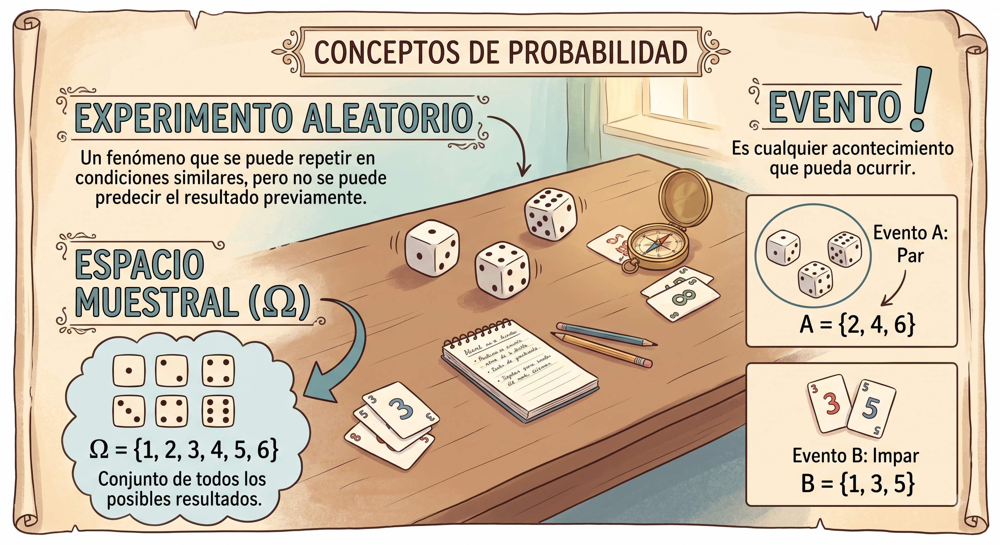
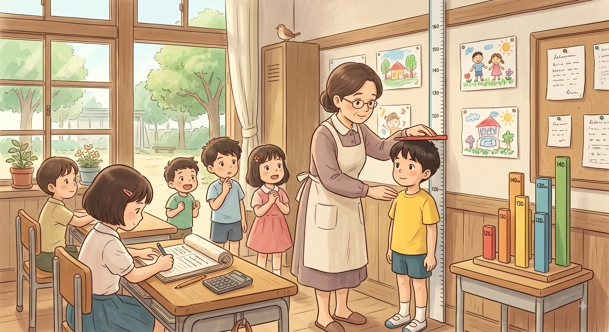
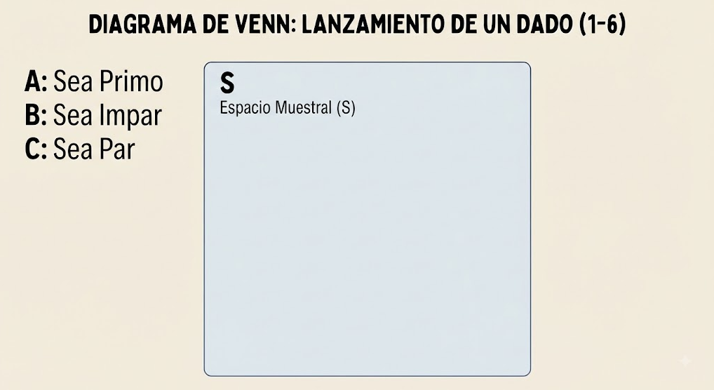

[XS-1130 Principios de Inferencia]
Información importante
Reglamentación
Probabilidad
Espacio Muestral
Experimento
Análisis Combinatorio
Teorema de Bayes
Distribuciones Discretas
Distribuciones Continuas
¿Qué se entiende por probabilidad?
De manera intuitiva, la probabilidad puede entenderse como una medida cuantitativa que nos dice que tan favorable es la ocurrencia de un suceso o evento.
Pero a esta definición le falta rigor matemático.
Experimento Aleatorio: Es un fenómeno que se puede repetir en condiciones similares, pero no se puede predecir el resultado del experimento previamente.
Espacio Muestral \((\Omega)\): Conjunto de todos los posibles resultados.
Evento: Es cualquier acontecimiento que pueda ocurrir.
Experimento Aleatorio: Lanzar un dado

Experimento Aleatorio: Medir la altura de niños de una escuela en cm

¿Qué es un evento? Es cualquier resultado o conjunto de resultados de un experimento aleatorio. Se dividen principalmente en dos categorías según su complejidad:
Nota!! Los eventos compuestos se construyen a partir de la unión de múltiples eventos simples.
Cuando analizamos múltiples eventos o sus resultados, evaluamos cómo se relacionan entre sí dentro del espacio muestral:
Nota!! Dos eventos pueden ser mutuamente excluyentes e igualmente probables al mismo tiempo.
Por ejemplo, al lanzar un dado justo, sacar un 1 y sacar un 2 son eventos mutuamente excluyentes (no puedes sacar ambos a la vez en un solo tiro) y son igualmente probables (ambos tienen probabilidad de \(1/6\)).
Al realizar múltiples pruebas o experimentos compuestos, analizamos si un evento influye sobre otro:
¿Cómo se entrelaza todo?
Para calcular la probabilidad de cualquier evento compuesto se debe tener en cuenta:
¿Los eventos son mutuamente excluyentes?
Si ocurren en secuencia, ¿son independientes?
¿Los resultados simples que los componen son igualmente probables? (Si sí, puedes usar la regla de Laplace: Casos favorables / Casos totales).

Defina un experimento aleatorio, determine el espacio muestral, indique los eventos simples, determine dos eventos compuestos mutuamente excluyentes.
Defina una secuencia de eventos que sean independientes y otra en la que los eventos no sean independiente.
Suponga que se tiene el experimento de lanzar una moneda tres veces:
Defina \(\Omega\).
Sea el Evento A: No salga ninguna cara.
Sea el Evento B: Salga dos escudos.
Sea el Evento C: Salga solamente 1 cara.
Genere el diagrama de Venn acorde al problema y defina cuáles de estos eventos son mutuamente excluyentes.
Enfoque Clásico.
Enfoque Frecuentista.
Enfoque Subjetivo.
Enfoque Axiomático.
Supuestos:
Espacio muestral finito.
Variable Aleatoria discreta.
Resultados son mutuamente excluyentes e igualmente probables.
\[P(A) = \frac{\text{Casos Favorables}}{\text{Casos Totales}} = \frac{\text{Cardinalidad de A}}{\text{Cardinalidad de }\Omega} = \frac{n(A)}{n}\]
Ejemplo:
Obtener una cara al lanzar una moneda equilibrada \(P(A) = \frac{\mid \{Cara\}\mid}{\mid\{Cara, Escudo \}\mid} = \frac{1}{2}\)
La suma de dos dados al lanzarlos sea 3 \(P(A) = \text{?}\)
Número de casos favorables desconocido.
Total de resultados podría ser infinito.
Resultados no igualmente probables, ejemplo: una moneda cargada que favorezca la aparición de escudo.
\(0 \leq P(A) \leq 1\)
\(P(A \cup B)= P(A)+P(B) - P(A\cap B)\)
\(P(A^c)=1-P(A)\)
\(P(\emptyset)=0\)
\(P(\Omega)=1\)
¿Cuál es la probabilidad de extraer un rey al sacar una carta de una baraja?
¿Cuál es la probabilidad de que al lanzar un dado salga un número par o un número primo?
¿Cuál es la probabilidad de obtener dos caras al lanzar una moneda dos veces?
¿Cuál es la probabilidad de que la suma al lanzar dos dados sea igual a 7?
También conocido como enfoque a posteriori. Se basa en resultados empíricos, y se interpreta como la frecuencia relativa de un evento.
Es decir si se tienen n repeticiones de un experimento y un evento A ocurre n(A) veces entonces la probabilidad de ocurrencia del evento queda dada por la frecuencia relativa de A :
\[f(A) = \frac{n(A)}{n}\]
Si las repeticiones se realizan de manera similar bajo las mismas condiciones y n es suficientemente grande entonces:
\[\lim_{n \to \infty} \frac{n(A)}{n} = P(A)\]
Dependencia de la cantidad de repeticiones “n”.
Repetición del experimento en condiciones similares.
No convergencia de las frecuencias relativas.
Si en un mes llueve 20 días y los restantes 11 días son soleados, ¿Cuál es la probabilidad de que no llueva en un día cualquiera?
Si un lote de 50 piezas, se encuentran 10 defectuosas, ¿Cuál es la probabilidad de que una pieza cualquiera se encuentre defectuosa?
Es una medida de creencia personal de un evento. Lo cual presenta problemas ya que dos personas pueden asignar probabilidades distintas, es útil cuando no se tiene conocimiento del evento.
Está apoyado en la teoría de conjuntos y evita las limitaciones de los enfoques clásicos, frecuentista y subjetivo.
Como su nombre lo indica se basa en la definición de axiomas para la construcción de la teoría de probabilidad.